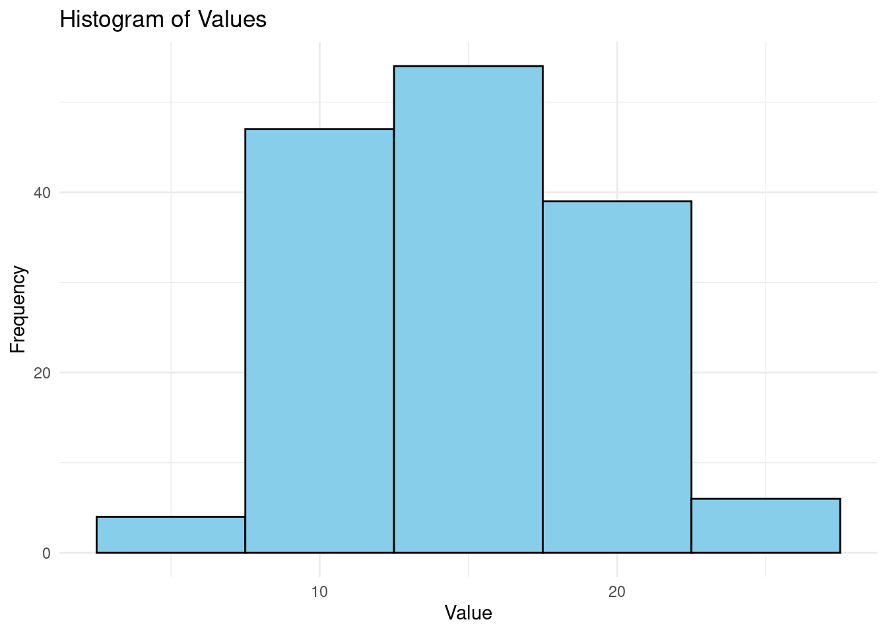
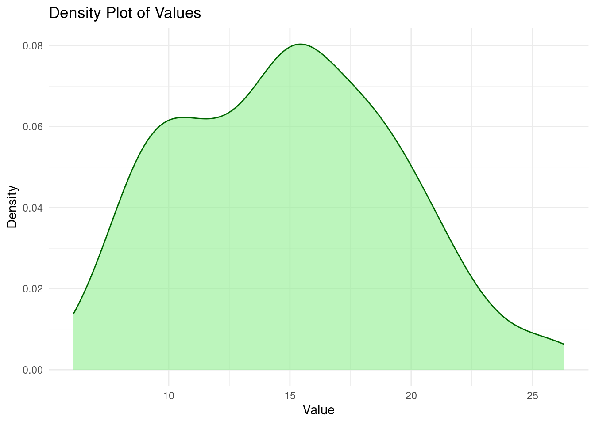
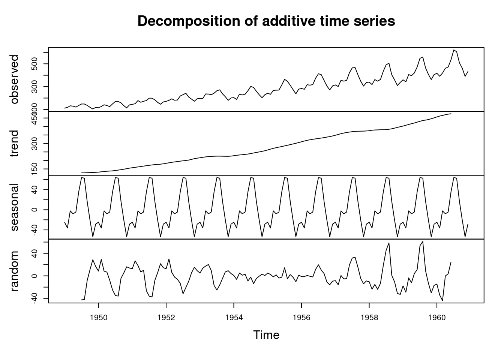

Chapter 6 GGPLOT
ggplot2 is a powerful data visualization package in R that allows you to create a wide variety of graphs and plots. It is based on the grammar of graphics, a structured approach to constructing plots that emphasizes the mapping of data to visual attributes.
6.1 Five key steps to ggplot
There are 5 key steps in plotting in ggplot;
1.The Setup - Read the data set, define x and y axis
The Labels - Title, X and Y axis labels
The Theme - Default, Black and White, colored etc.
The Facets - Individual Graphs for each group in data with exactly same range
The Layers or geoms - The actual plot type - e.g Bar plot, Box plot, Violin plot etc.
To install ggplot, run the below command in the console.
install.packages("ggplot2")6.2 Prepare the data for plotting - Data Assessment
Invoke the libraries
library(ggplot2)
library(data.table)Read the data using the fread function
##
## Attaching package: 'data.table'## The following objects are masked from 'package:dplyr':
##
## between, first, lastView the first five records of the data
# Load the library
library(data.table)
methylated_c = fread("data/R_WORKSHOP.csv", header=T, sep=",")
# View the first few records
head(methylated_c)## Chromosome Context Count Count_in_millions
## <char> <char> <int> <num>
## 1: Chr1 CG 1394740 1.394740
## 2: Chr2 CG 915144 0.915144
## 3: Chr3 CG 1118062 1.118062
## 4: Chr4 CG 879170 0.879170
## 5: Chr5 CG 1260598 1.260598
## 6: Chr1 CHG 1543980 1.543980Look at the nature of the data
# Load the library
library(data.table)
methylated_c = fread("data/R_WORKSHOP.csv", header=T, sep=",")
str(methylated_c)## Classes 'data.table' and 'data.frame': 15 obs. of 4 variables:
## $ Chromosome : chr "Chr1" "Chr2" "Chr3" "Chr4" ...
## $ Context : chr "CG" "CG" "CG" "CG" ...
## $ Count : int 1394740 915144 1118062 879170 1260598 1543980 988829 1225767 957674 1377407 ...
## $ Count_in_millions: num 1.395 0.915 1.118 0.879 1.261 ...
## - attr(*, ".internal.selfref")=<externalptr>In the data set, there are numeric variables a well as character columns. There are 15 records in the data set
Calculate the summary statistics
# Load the library
library(data.table)
methylated_c = fread("data/R_WORKSHOP.csv", header=T, sep=",")
summary(methylated_c)## Chromosome Context Count Count_in_millions
## Length:15 Length:15 Min. : 879170 Min. :0.8792
## Class :character Class :character 1st Qu.:1053446 1st Qu.:1.0534
## Mode :character Mode :character Median :1377407 Median :1.3774
## Mean :2857317 Mean :2.8573
## 3rd Qu.:5025181 3rd Qu.:5.0252
## Max. :7917805 Max. :7.9178Do the data have null values?
# Load the library
library(data.table)
methylated_c = fread("data/R_WORKSHOP.csv", header=T, sep=",")
# Count the null values in the data
sum(is.na(methylated_c))## [1] 0This data does not have any null values.
# Load the library
library(data.table)
methylated_c = fread("data/R_WORKSHOP.csv", header=T, sep=",")
# what type is the data?
class(methylated_c)## [1] "data.table" "data.frame"6.3 Plotting
6.3.1 Base set up
Before plotting the data, you need to;
Define the graph skeleton. This is just an empty
ggplot()function without additional argumentsDefine the aesthetics. It defines how data should be mapped to visual properties like position, color, shape, and size
Define the labels. The labels make the visualizations informative and easy to understand for the user.
# Load the library
library(ggplot2)
library(data.table)
#Load the data using fread
methylated_c = fread("data/R_WORKSHOP.csv", header=T, sep=",")
graph=ggplot(methylated_c,
aes(x=Chromosome, y=Count_in_millions))+ #graph aesthetics
labs(x="Chromosomes", y="Cytosine count in millions", title="C distribution in A thaliana") #graph labels
print(graph)
Define the type of graph - geoms. For this case, the graph is a bar graph.
geoms()stands for ‘geometric objects’. Inggplot, there are different types ofgeomsto define which graph is to be plotted. Some of the examples include;geom_point()for scatter plotgeom_line()for a line chartgeom_density()for a density plotsgeom_histogram()for histogramsgeom_boxplot()for box plotsgeom_col()for bar chartgeom_tile()for heat maps
In this course we shall explore a few of them but the concepts applies to all of them. Now lets make our plot a bar chart. geom() function will be added to a variable graph defined above to plot a bar chart.
# Load the library
library(ggplot2)
library(data.table)
#Load the data using fread
methylated_c = fread("data/R_WORKSHOP.csv", header=T, sep=",")
graph=ggplot(methylated_c,
aes(x=Chromosome, y=Count_in_millions))+ #graph aesthetics
labs(x="Chromosomes", y="Cytosine count in millions", title="C distribution in A thaliana") #graph labels
graph1 = graph + geom_col() #plot a bar chart
print(graph1)
If you can remember our data, methylated_c has a column/variable “Context”. In this step, the variable “Context” will be introduced to make a stacked bar chart, therefore, the C distribution in Chromosomes based on “Context” will be plotted to add some depth to the data.
# Load the library
library(ggplot2)
library(data.table)
#Load the data using fread
methylated_c = fread("data/R_WORKSHOP.csv", header=T, sep=",")
graph=ggplot(methylated_c,
aes(x=Chromosome, y=Count_in_millions))+ #graph aesthetics
labs(x="Chromosomes", y="Cytosine count in millions", title="C distribution in A thaliana") #graph labels
graph1 = graph + geom_col() #plot a bar chart
graph2=graph1+aes(fill=Context)
print(graph2)To make it a grouped bar chart, a position argument is introduced.
# Load the library
library(ggplot2)
library(data.table)
#Load the data using fread
methylated_c = fread("data/R_WORKSHOP.csv", header=T, sep=",")
graph=ggplot(methylated_c,
aes(x=Chromosome, y=Count_in_millions))+ #graph aesthetics
labs(x="Chromosomes", y="Cytosine count in millions", title="C distribution in A thaliana") #graph labels
# Make it grouped bar chart
graph3=graph+geom_col(position="dodge")+aes(fill=Context)
print(graph3)Faceted graphs - these are related data plotted separately on the same image/diagram.
The facet_grid() function is added to the variable graph3 to created faceted graphs based on the variable “Context”.
# Load the library
library(ggplot2)
library(data.table)
#Load the data using fread
methylated_c = fread("data/R_WORKSHOP.csv", header=T, sep=",")
graph=ggplot(methylated_c,
aes(x=Chromosome, y=Count_in_millions))+ #graph aesthetics
labs(x="Chromosomes", y="Cytosine count in millions", title="C distribution in A thaliana") #graph labels
# Make it grouped bar chart
graph3=graph+geom_col(position="dodge")+aes(fill=Context)
graph4=graph3+facet_grid(~Context)
print(graph4)
GGPlot randomly select colors to paint the graph but the biologist/statistician can use predefined colors as below.
# Load the library
library(ggplot2)
library(data.table)
#Load the data using fread
methylated_c = fread("data/R_WORKSHOP.csv", header=T, sep=",")
graph=ggplot(methylated_c,
aes(x=Chromosome, y=Count_in_millions))+ #graph aesthetics
labs(x="Chromosomes", y="Cytosine count in millions", title="C distribution in A thaliana") #graph labels
# Make it grouped bar chart
graph3=graph+geom_col(position="dodge")+aes(fill=Context)
graph4=graph3+facet_grid(~Context)
graph5=graph4+scale_fill_manual(values=c("brown", "blue", "red"))
print(graph5)
- The background color can be modified to ones aesthetic taste. The
theme()function along with relevant arguments to make the background color of your choice, in this its light blue.
# Load the library
library(ggplot2)
library(data.table)
#Load the data using fread
methylated_c = fread("data/R_WORKSHOP.csv", header=T, sep=",")
graph=ggplot(methylated_c,
aes(x=Chromosome, y=Count_in_millions))+ #graph aesthetics
labs(x="Chromosomes", y="Cytosine count in millions", title="C distribution in A thaliana") #graph labels
# Make it grouped bar chart
graph3=graph+geom_col(position="dodge")+aes(fill=Context)
graph4=graph3+facet_grid(~Context)
graph5=graph4+scale_fill_manual(values=c("brown", "blue", "red"))
graph5+theme_bw(base_size=9)+theme(panel.background = element_rect(fill="lightblue"))All of the above steps can be combined to come up with a decent graph from ggplot library.
# Load the library
library(ggplot2)
library(data.table)
#Load the data using fread
methylated_c = fread("data/R_WORKSHOP.csv", header=T, sep=",")
my_title = expression(paste("Cystosine distribution in ", italic("Arabidopis thaliana")))#Define the title
graph_final = ggplot(methylated_c, aes(x=Chromosome, y=Count_in_millions))+
labs(x="Chromosomes", title = my_title) +
facet_grid(~Context) +
geom_col(position="dodge")+
aes(fill=Context)+scale_fill_manual(values = c("brown", "blue", "red"))+
theme_bw(base_size = 9)+theme(panel.background = element_rect(fill="lightblue"))
print(graph_final)
The expression is used to combine name italics and normal fonts - this helps biologists include botanical names in charts
Activity
restaurant tips dataset - https://raw.githubusercontent.com/balsaedi/RCourse_1/main/data/tips.csv
In this activity, you are required to use the restaurant tips dataset. The link to the dataset is provided above. Read the csv data to a data frame and plot the following graphs.
- A bar chart to compare the average tips from male and female customers
- A histogram to show the distribution of bills
- A scatter plot to show the relationship between bills and tips.
# Load the required libraries
# CODE HERE
# Read the csv data to a data frame and plot the following graphs.
# CODE HERE
## a. A bar chart to compare the average tips from male and female customers
# CODE HERE
## b. A histogram to show the distribution of bills
# CODE HERE
## c. A scatter plot to show the relationship between bills and tips.
# CODE HERE6.4 Working with inbuilt iris data
We have worked with iris data set before. In this topic we shall ask some questions and plot them on a box plot to cement our understanding in ggplot
- Plot a box plot to compare the sepal length in different iris species
# Load the library
library(ggplot2)
library(data.table)
#Load the data using fread
methylated_c = fread("data/R_WORKSHOP.csv", header=T, sep=",")
graph = ggplot(iris, aes(x=Species, y=Sepal.Length))+ # the graph skeleton
geom_boxplot()+aes(fill=Species) # aesthetics
print(graph) Virginica have higher sepal length however some virginica have less sepal length than versicolor
Virginica have higher sepal length however some virginica have less sepal length than versicolor
Violin plot will show a better distribution than box plot

Since some data cleaning and manipulation is required before diving deep into visualizations, a package tidyr is introduced. It can be installed by invoking the command below to the console.
install.packages("tidyr")This package is a part of the tidyverse collection designed to make data cleaning and reshaping easy. It has multiple functions for instance gather(), spread(), pivot_wider(), pivot_longer(), separate(), unite() and fill(). In this section we shall not dive deep to explore tidyr package but we will borrow one of its important functions, gather() to manipulate iris data when plotting. This function, gather() is used to reshape data especially from a long format to a short format.
Invoke the library
library(tidyr) # can be used to convert from short format to long format- Convert to a long format
gather command is used to convert data into fewer columns. The columns from sepal length to petal width are to be merged to a single column called measurements
library(tidyr) # can be used to convert from short format to long format
data(iris)
#Gather from sepal length to petal width column into type and measurement column
iris_long = gather(iris, type, measurement, Sepal.Length:Petal.Width, factor_key = TRUE)
tail(iris_long)## Species type measurement
## 595 virginica Petal.Width 2.5
## 596 virginica Petal.Width 2.3
## 597 virginica Petal.Width 1.9
## 598 virginica Petal.Width 2.0
## 599 virginica Petal.Width 2.3
## 600 virginica Petal.Width 1.8Lets plot the data to a box plot
library(tidyr) # can be used to convert from short format to long format
library(ggplot2)
data(iris)
#Gather from sepal length to petal width column into type and measurement column
iris_long = gather(iris, type, measurement, Sepal.Length:Petal.Width, factor_key = TRUE)
graph=ggplot(iris_long, aes(x=Species,y=measurement))+
labs(x="Species", y="Length in cm", title = "variation in Petals and Sepals of Iris Species")+
theme(axis.text = element_text(angle=90))+
facet_grid(~type)+
aes(fill=Species)+
geom_boxplot()
print(graph)
the same can also be plotted to a violin plot
library(tidyr) # can be used to convert from short format to long format
library(ggplot2)
data(iris)
#Gather from sepal length to petal width column into type and measurement column
iris_long = gather(iris, type, measurement, Sepal.Length:Petal.Width, factor_key = TRUE)
graph=ggplot(iris_long, aes(x=Species,y=measurement))+
labs(x="Species", y="Length in cm", title = "variation in Petals and Sepals of Iris Species")+
theme(axis.text = element_text(angle=90))+
facet_grid(~type)+
aes(fill=Species)+
geom_violin()
print(graph)
Activity
In this activity, you will be required to use the famous R inbuilt data set, mtcars. Load the data set using the command, data(mtcars) and plot atleast two graphs
6.5 CODE CHALLENGE
thyroid disease - https://www.kaggle.com/datasets/jainaru/thyroid-disease-data/data
HR analytics dataset - https://www.kaggle.com/datasets/pavansubhasht/ibm-hr-analytics-attrition-dataset/data
You will be required to retrieve the HR analytics employee attrition data set from kaggle. Click here to check out the data set. Read the data into an R data frame and answer the following questions using
read.csvandggplot2.- Plot a histogram to show the distribution of age among the employees. Name the chart
hist1a. - Draw a boxplot to show the employees’ hourly rate in the sales department. Are there any outliers? What is the median employees’ hourly rate from the boxplot? Name it
box1b. - How does age relate to monthly income? Are younger employees paid less? Plot a scatter plot to show the relationship between employees monthly income and age. Note:Age should be in the x axis. Name it
scatter1c. - How many male and female employees are their in the company? Are female employees more than male employees. Plot a bar chart to show. Name it
barchart1d. - Are male employees retained retained more than the female employees in the company. Filter to retrieve the retained employees(“Attrition=”No”) only. Name it
bar1e. - What is the marital status of the employees in the Sales department? Filter the data to retrieve the sales department then plot the value count of each marital status in the filtered data set on a pie chart. Name it
pie1f. - Finally plot a heatmap to show the correlation of numeric columns. Name the plot
heatmap1.
- Plot a histogram to show the distribution of age among the employees. Name the chart
You will be required to download the thyroid disease csv file from here. It contains 13 clinicopathologic features aiming to predict recurrence of well differentiated thyroid cancer. The data set was collected in duration of 15 years and each patient was followed for at least 10 years. The data was procured from thyroid disease datasets provided by the UCI Machine Learning Repository. You will load the csv file into R data frame,
read.csv, and solve the following questions.- After the initial thyroid cancer treatment, has the disease recurred or not? Compare the two categories of patients (recurred and not recurred) using a bar chart. Name it
barchart2a. - After physical examination of the thyroid gland and the surrounding structures, there were patients who had multinodular goiter, other single nodular gioters while rest of the patients had other complications. What are the composition of the patients? Plot a pie chart to show. Name it
pie2b. - Plot a grouped bar chart to show the average risk and age of thyroid disease between males and female patient. Risk and Age columns against gender. Name it
grouped_barchart2c. - Plot a desnsity plot to show the distribution of age. Which age group is mostly affected by thyroid disease? Name it
density_plot2d.
- After the initial thyroid cancer treatment, has the disease recurred or not? Compare the two categories of patients (recurred and not recurred) using a bar chart. Name it